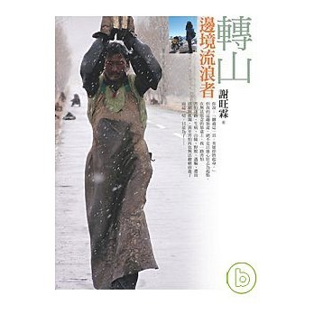
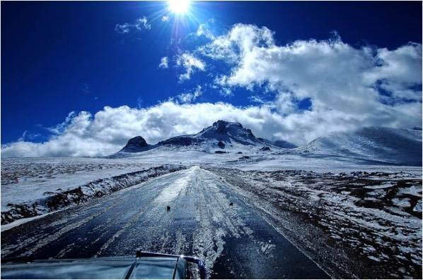

這次旅行不會“即時”連載遊記，所以可以省下電腦跟尋找網路的功夫，還有每天花至少三小時寫遊記的時間。
畢竟一路上有網路的地方實在不多，且老實說，騎在青藏公路上，景色並不是特別的變化多端。
一開始我可能會寫好漂亮，好冷，好高，後來我還能再寫什麼？
我這輩子怎麼樣也寫不出像是謝旺霖-轉山那樣讓人感動、深深投入、慟哭流涕的文學作品。
這文學已經是超越遊記的存在，即使是2008年初的書，至今仍不斷的在復印，書店內也很容易找到它的蹤影。

我的遊記永遠就是早上幾點起床，路上騎了什麼編號的路，中午吃了什麼，晚上住在哪裡。
流水帳的遊記我本身並不討厭，一來很好記錄，二來很方便閱讀。
但要出成書，我覺得實在是貽笑大方～
這次的旅行，希望可以簡簡單單的出發，沒有太多的額外元素和干擾。
旅行中會用筆記本/拍照的方式記錄著過程，由於青海/西藏，電力缺乏，大多靠太陽能/風力發電，所以晚上都會限電。
10~11月份，大概晚上7~8點太陽就會下山，入夜後氣溫急降，沒事也不會跑出去受凍，早上大概8點太陽才會露臉。
所以每天都可以安安穩穩地睡上10幾個小時，醒著的時候，就是踩著踏板前進，想必是一個很安靜的旅行。

這樣很好，在靠近天堂的地方，不需要太多的聲音。
可以和自己的相處，透過極其簡單的飲食和作息。
把自己一點一滴的找回來，也許，如果還在的話。